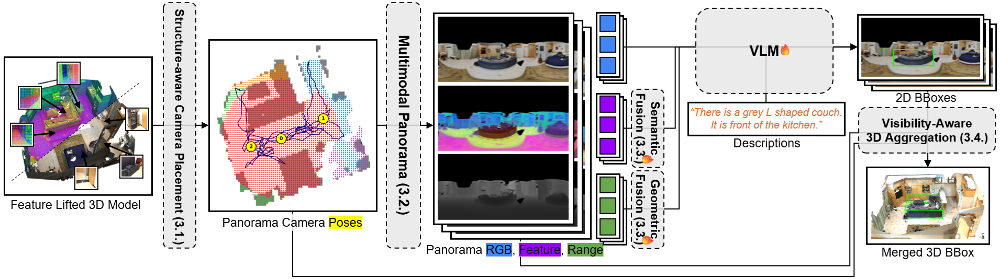

3D Visual Grounding (3DVG) is a critical bridge from vision-language perception to robotics, requiring both language understanding and 3D scene reasoning. Traditional supervised models leverage explicit 3D geometry but exhibit limited generalization, owing to the scarcity of 3D vision-language datasets and the limited reasoning capabilities compared to modern vision-language models (VLMs).
We propose a generalizable 3DVG framework, PanoGrounder, that couples a multi-modal panoramic representation with pretrained 2D VLMs for strong vision-language reasoning. Panoramic renderings, augmented with 3D semantic and geometric features, serve as an intermediate representation between 2D and 3D, and offer two major benefits: (i) they can be directly fed to VLMs with minimal adaptation and (ii) they retain long-range object-to-object relations thanks to their 360-degree field of view. We devise a three-stage pipeline that places a compact set of panoramic viewpoints considering the scene layout and geometry, grounds a text query on each panoramic rendering with a VLM, and fuses per-view predictions into a single 3D bounding box via lifting.
Our approach achieves state-of-the-art results on ScanRefer and Nr3D, and demonstrates strong generalization to unseen 3D datasets and text rephrasings.

Given a renderable 3D scene (a triangle mesh or 3D Gaussian Splatting) and a text query, PanoGrounder predicts the 3D bounding box of the referred object, using panoramic renderings as a 2D–3D interface. The pipeline runs in three stages.
Since panoramas are omnidirectional, we only choose camera locations. We estimate the floor via RANSAC and greedily select a compact viewpoint set — scored by ray coverage, distance-to-surface, and distance-to-trajectory — covering each scene with only 2.4 cameras on average.
At each viewpoint we render RGB, geometric (range), and semantic feature panoramas. The geometric and semantic cues are injected into selected VLM layers through a lightweight adapter (a 2-layer MLP + a zero-initialized 1×1 convolution), preserving the VLM's pretrained behavior while adding task-relevant signal. The VLM then predicts a 2D box on each panorama.
Per-view 2D predictions are lifted to metric 3D using rendered depth and camera extrinsics. We pick the most reliable anchor view by cross-view consistency, fuse the visible point sets, and fit an axis-aligned 3D box. Training uses cross-entropy with an Earth Mover's Distance (EMD) loss for distance-aware supervision.
PanoGrounder achieves state-of-the-art or top results across benchmarks. We group methods by training regime (single benchmark vs. mixed datasets). S+R denotes joint training on ScanRefer and ReferIt3D (Nr3D/Sr3D).
| Method | Nr3D | Sr3D | ScanRefer | ||||||||||
|---|---|---|---|---|---|---|---|---|---|---|---|---|---|
| Easy | Hard | VD | VID | Overall | Easy | Hard | VD | VID | Overall | Unique | Multiple | Overall | |
| Single Dataset | |||||||||||||
| BUTD-DETR | 60.7 | 48.4 | 46.0 | 58.0 | 54.6 | 68.6 | 63.2 | 53.0 | 67.6 | 67.0 | 84.2 | 46.6 | 52.2 |
| ViL3DRel | 70.2 | 57.4 | 62.0 | 64.5 | 64.4 | 74.9 | 67.9 | 63.8 | 73.2 | 72.8 | 81.6 | 40.3 | 47.9 |
| 3D-VisTA | 65.9 | 49.4 | 53.7 | 59.4 | 57.5 | 72.1 | 63.6 | 57.9 | 70.1 | 69.6 | 77.4 | 38.7 | 45.9 |
| MIKASA | 69.7 | 59.4 | 65.4 | 64.0 | 64.4 | 78.6 | 67.3 | 70.4 | 75.4 | 75.2 | – | – | – |
| MCLN | – | – | – | – | 59.8 | – | – | – | – | 68.4 | 86.9 | 52.0 | 57.2 |
| PQ3D | 73.3 | 56.7 | 60.7 | 67.0 | 64.9 | 78.8 | 68.2 | 51.5 | 76.7 | 75.6 | 85.2 | 46.8 | 52.8 |
| LIBA | – | 57.2 | 60.3 | – | 64.5 | – | 70.2 | 61.7 | – | 75.8 | 88.8 | 54.4 | 59.6 |
| VGMamba | – | 61.4 | – | – | 68.3 | – | 74.4 | – | – | 81.3 | 91.9 | 54.8 | 60.0 |
| ViewSRD | 75.3 | 64.8 | 68.6 | 70.6 | 69.9 | 78.3 | 70.6 | 69.0 | 76.2 | 76.0 | 82.1 | 37.4 | 45.4 |
| Ours | 82.2 | 67.2 | 70.5 | 76.3 | 74.6 | 81.3 | 74.2 | 60.5 | 80.0 | 79.1 | 84.3 | 55.3 | 61.0 |
| Multi Dataset | |||||||||||||
| 3D-VisTA | 72.1 | 56.7 | 61.5 | 65.1 | 64.2 | 78.8 | 71.3 | 58.9 | 77.3 | 76.4 | 81.6 | 43.7 | 50.6 |
| GPS | 72.5 | 57.8 | 56.9 | 67.9 | 64.9 | 80.1 | 71.6 | 62.8 | 78.2 | 77.5 | – | – | – |
| PQ3D | 75.0 | 58.7 | 62.8 | 68.6 | 66.7 | 82.7 | 72.8 | 62.9 | 80.5 | 79.7 | 86.7 | 51.5 | 57.0 |
| Chat-Scene | – | – | – | – | – | – | – | – | – | – | 89.6 | 47.8 | 55.5 |
| LLaVA-3D | – | – | – | – | – | – | – | – | – | – | – | – | 50.1 |
| UniVLG | 73.3 | 57.0 | 55.1 | 69.9 | 65.2 | 84.4 | 75.2 | 66.2 | 82.4 | 81.7 | – | – | 60.7 |
| Ours (S+R) | 84.1 | 68.4 | 72.9 | 77.5 | 76.1 | 82.3 | 74.5 | 66.6 | 80.6 | 79.9 | 85.0 | 56.4 | 62.0 |
Table 1. Evaluation on Nr3D, Sr3D, and ScanRefer. Splits: Easy/Hard, VD/VID (View-Dependent / View-Independent). ScanRefer reports Acc@0.25 (IoU); ReferIt3D reports Top-1 accuracy. S+R = trained jointly on ScanRefer + ReferIt3D. Ours rows highlighted; bold marks the best in a column within each training regime.
| Method | Backbone | Easy | Hard | VD | VID | Overall |
|---|---|---|---|---|---|---|
| ZSVG3D | GPT-3.5-turbo | 46.5 | 31.7 | 36.8 | 40.0 | 39.0 |
| SeeGround | Qwen2-VL-72B | 54.5 | 38.3 | 42.3 | 48.2 | 46.1 |
| VLM-Grounder | GPT-4V | 55.2 | 39.5 | 45.8 | 49.4 | 48.0 |
| Ours | CogVLM-17B | 64.2 | 42.7 | 49.8 | 54.7 | 53.2 |
Table 2. Zero-shot on Nr3D. Without any fine-tuning, ours surpasses methods with far larger backbones.
| Method | ScanRefer | ARKitScenes | 3RScan | ||||||
|---|---|---|---|---|---|---|---|---|---|
| uniq. | mult. | over. | uniq. | mult. | over. | uniq. | mult. | over. | |
| ViL3DRel | 92.0 | 51.8 | 59.6 | 57.2 | 21.1 | 28.3 | 71.8 | 31.3 | 36.8 |
| 3D-VisTA | 89.5 | 49.9 | 57.2 | 59.7 | 26.6 | 32.9 | 74.1 | 32.0 | 37.7 |
| BUTD-DETR* | 92.5 | 52.6 | 58.5 | 66.3 | 30.6 | 36.1 | – | – | – |
| MCLN* | 93.4 | 54.9 | 60.6 | 61.2 | 30.0 | 35.3 | – | – | – |
| Ours | 91.7 | 58.5 | 64.9 | 74.2 | 48.0 | 53.5 | 80.4 | 37.7 | 43.8 |
Table 3. Trained on ScanRefer, evaluated on unseen ARKitScenes and 3RScan. All methods use GT object segmentation; * additionally uses GT semantic labels.
PanoGrounder accurately localizes referred objects across diverse room types and query types, reliably parsing relational cues such as “A next to B” or “A above B” and grounding them to the correct 3D instance. Explore the results interactively below: pick a scene and a text query to see the predicted 3D box (green) against ground truth (blue) on the left, and the per-camera panoramic masks and 2D boxes on the right.
@inproceedings{jung2026panogrounder,
title = {PanoGrounder: Bridging 2D and 3D with Panoramic Scene Representations
for VLM-based 3D Visual Grounding},
author = {Seongmin Jung and Seongho Choi and Gunwoo Jeon and Minsu Cho and Jongwoo Lim},
booktitle = {Proceedings of the European Conference on Computer Vision (ECCV)},
year = {2026},
}